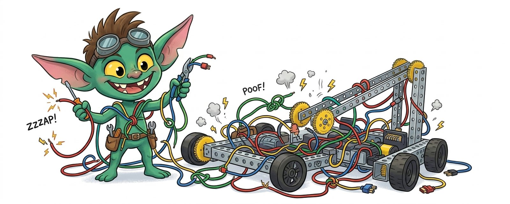
Every FTC team eventually meets the gremlin. The Control Hub reboots, a motor freezes, or the Driver Hub loses the robot. The team swaps parts in a panic, and the problem disappears as mysteriously as it came.
These failures are almost never truly random. They come from three sources: static discharge, electrical noise, and connectors that work loose. This lesson shows where each one comes from and how to get rid of it for good.
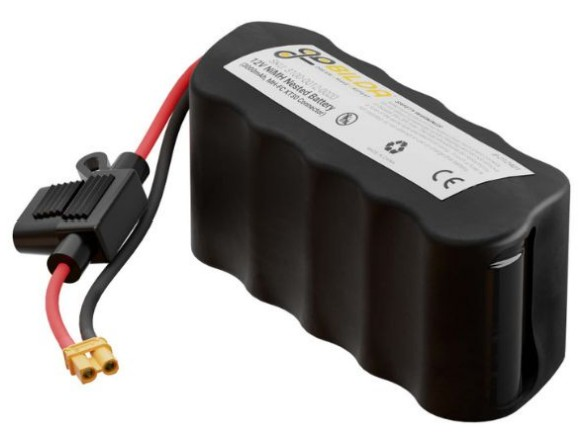
The same 12 V battery feeds the drive motors and the hub's computer. A motor that stalls or reverses can pull 10 A or more in a split second. That spike makes the voltage dip and sends electrical noise along every wire it touches, and your Control Hub and sensors are connected to those same wires.
That's the root tension in FTC wiring: big, noisy motor power and tiny, sensitive digital signals share one small robot, one battery, one metal frame, and often the same wire bundles.
Electrostatic discharge (ESD) is the spark you get after shuffling across a carpet in socks and touching a doorknob. Robots do the same thing, at thousands of volts.
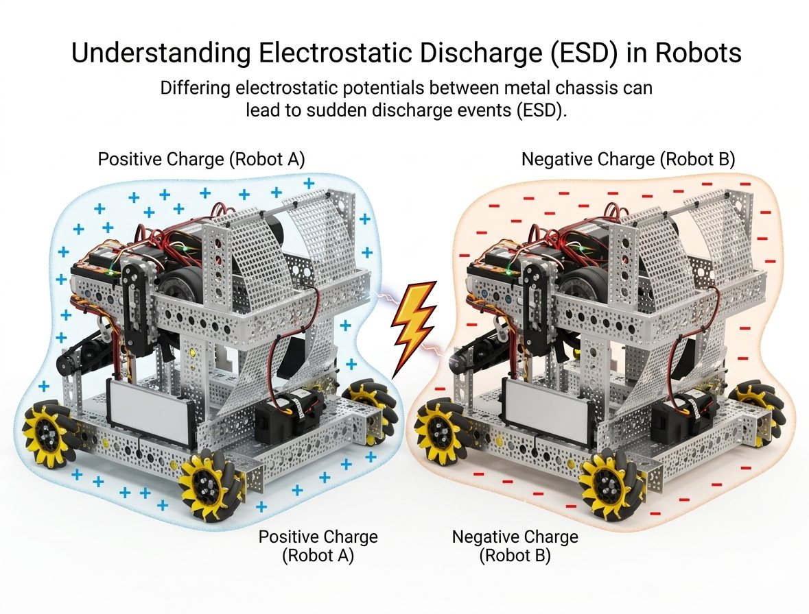
ESD depends on humidity, the tiles, your wheels, how you drive and who you hit. One match is fine, and the next has three reboots in 30 seconds. Teams blame the code, the battery and the USB cable before they find the real cause.
FIRST's own guidance stacks several defenses together. No single one is enough.
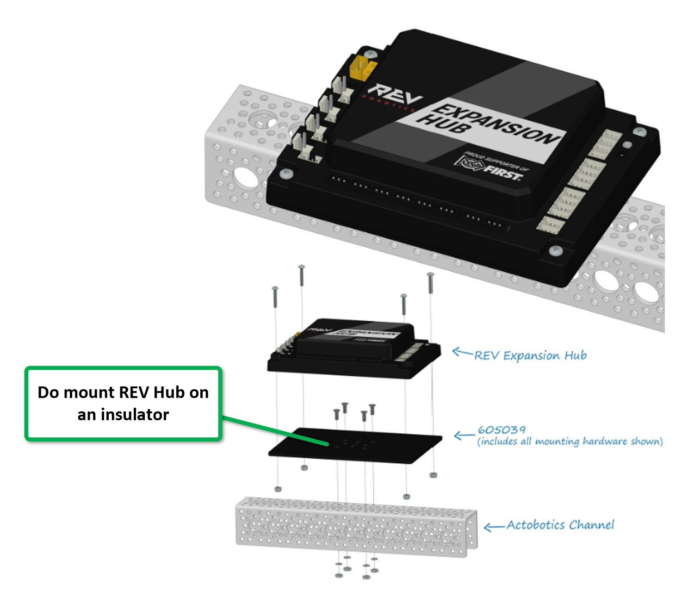
Mount the hubs on something non-conductive, such as thin plywood, PVC, polycarbonate or HDPE, instead of bolting them straight to aluminum. Then look for exposed metal on the electronics: the backs of sensors, the plastic 4-pin sensor connectors, and servo extension joints. Keep those at least 10 mm away from the frame, or wrap them in electrical tape.
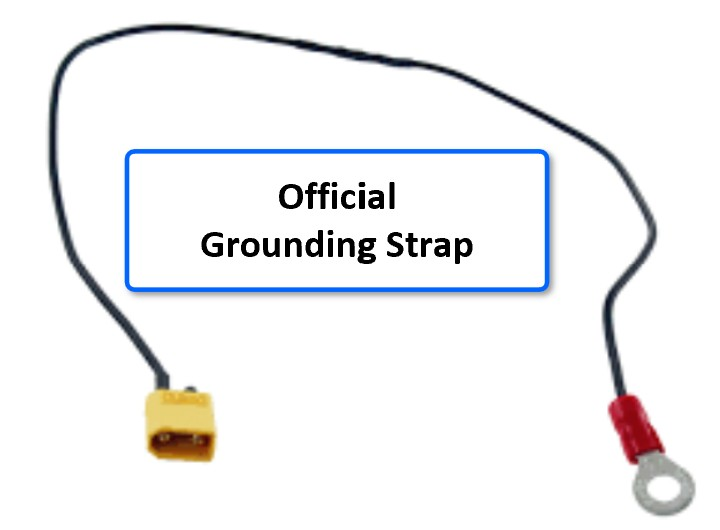
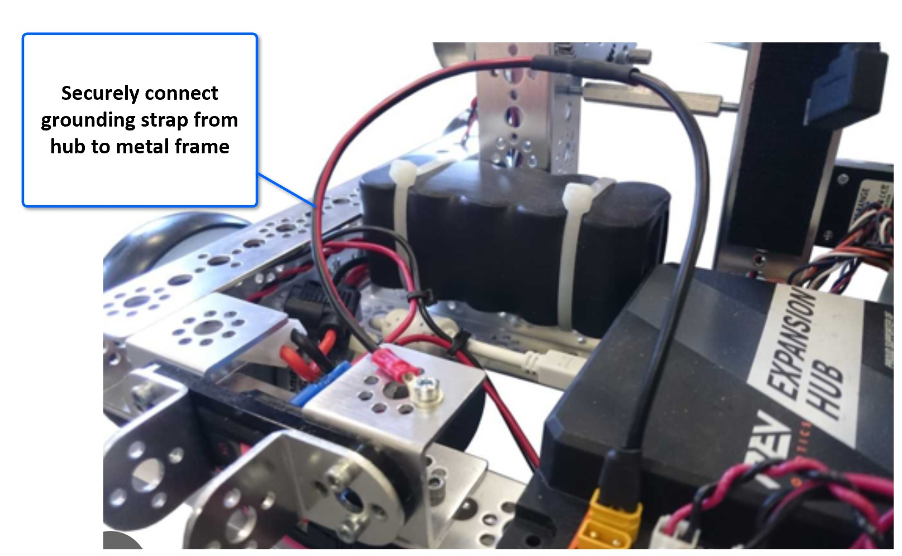
This seems to contradict defense 1, but the two work together. The resistive grounding strap connects the electronics' ground to the frame through a 470 Ω resistor. The frame and the electronics then stay at the same voltage, so charge leaks away slowly instead of building up and jumping across as a spark.
Never make your own. The built-in resistor stops a shorted 12 V wire from dumping current into the frame, and the keyed connector stops anyone plugging 12 V straight into the chassis. The game manual lists which cables are legal.
A ferrite choke is a snap-on ring that blocks sudden current spikes. Put one on each sensor, encoder and servo cable, and use USB cables that already have chokes. They're cheap and we keep a bag of them in the pit.
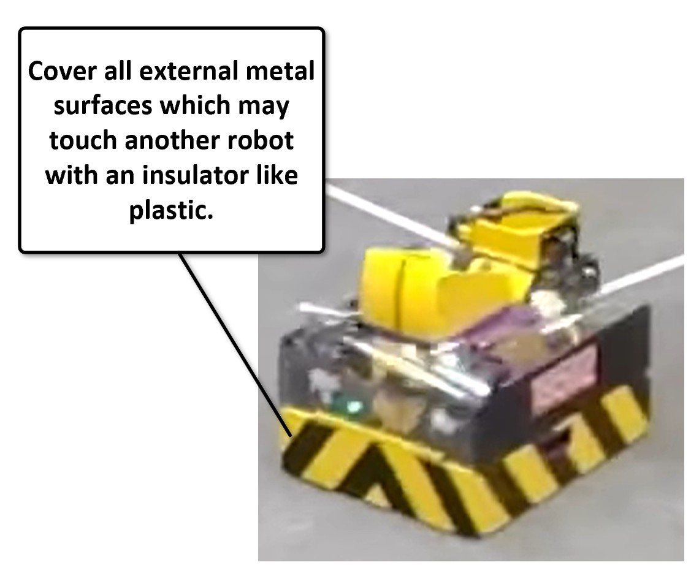
Discharges happen at points of contact. Cover any metal that could touch another robot, the wall or a game element. Polycarbonate panels, wooden or rubber bumpers, and electrical tape on claw tips and channel ends all work. If there's no metal-to-metal contact, there's no path for the spark.
Isolate the hubs and keep exposed connectors away from metal. Ground the electronics to the frame with an approved resistive strap. Choke the signal cables. Insulate the robot's outside. Use all four.
ESD hits all at once and crashes things. Noise is quieter. It doesn't reboot the hub. It corrupts sensor readings, makes the IMU drift, or adds random jumps to your odometry.
Motors are noisy. The motor controller switches current on and off thousands of times a second (PWM), so the motor wires broadcast electromagnetic energy like a small radio transmitter. Any wire running alongside them acts as a receiving antenna. The closer the wires and the longer they run together, the worse the crosstalk.
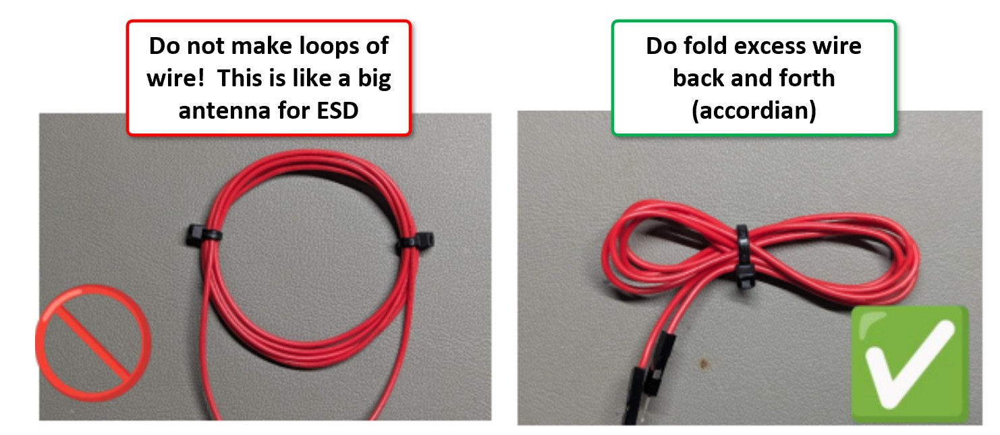
Your instinct with extra wire is to wind it into a neat loop and zip-tie it. Don't. A coil works like an antenna: it collects every changing magnetic field nearby and turns it into voltage on the wire, and a bigger loop collects more. Fold extra length back and forth instead. The noise picked up by neighboring folds mostly cancels out.
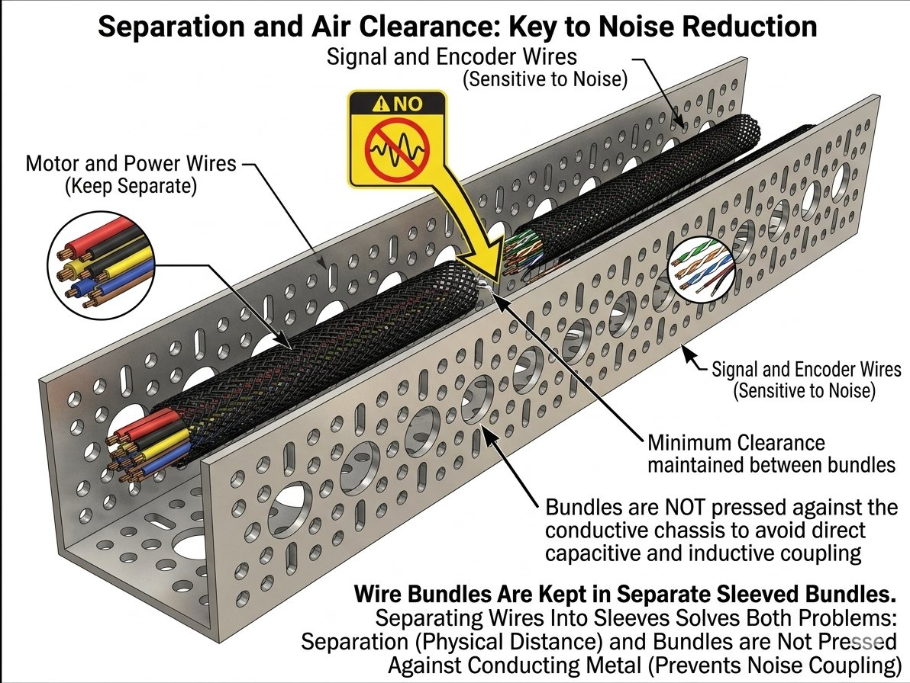
Run motor power wires along one side of the robot and signal wires (encoder, I2C, digital, analog) along the other. Where they have to cross, cross them at 90° to keep the overlap short. Separate braided sleeves help keep the groups organized and apart. Keep motor wires away from USB camera cables too.
On the Control Hub, I2C bus 0 is shared with the built-in IMU. An external sensor on that bus has to compete with the IMU for the same two wires, which can corrupt the IMU's data, the sensor's data, or both. Plug external I2C sensors into buses 1, 2 or 3.
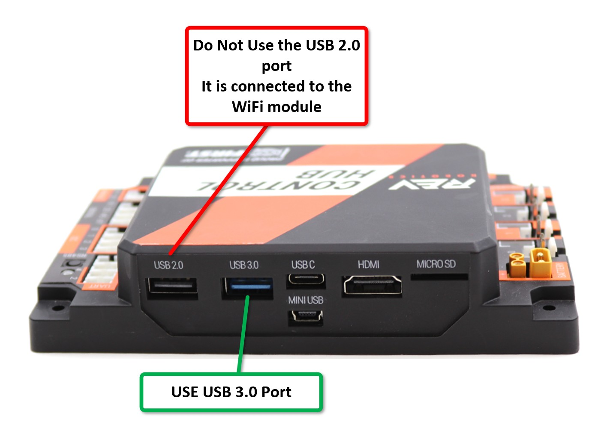
REV and FIRST both warn about this one. A static zap into the Control Hub's USB 2.0 port can upset the Wi-Fi chip, and that looks exactly like a random Driver Hub disconnect. Plug cameras and other USB devices into the USB 3.0 port (the one with the blue insert).
After hundreds of plug-ins, the split pins inside an XT30 lose their springiness. The connector still looks fine, but a bump during a match can break contact for a few milliseconds. That's long enough to reboot the hub.
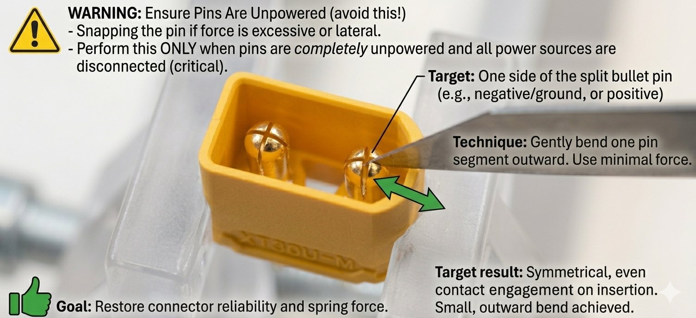
If a pin is bent, cracked or still loose, replace the connector. XT30 pigtails cost far less than a lost match.
Run through this before every competition, and again after any repair. Ticking the boxes doesn't save anything; reloading the page clears them.
If every box is ticked, you've removed most of the electrical problems that plague FTC robots. What's left is usually a bad cable (swap it), old firmware (update it), or a real bug in your code, which you can now chase with confidence.